FCLoopGraphPlot[{edges, labels}] visualizes the graph of
the given loop integral using the provided list of edges, styles and
labels using the built-in function Graph. The Option
Graph can be used to pass options to the Graph
objects.
By default, FCLoopGraphPlot returns a
Graph. When using Mathematica 12.2 or newer, it is also
possible to return a Graphics object created by
GraphPlot. For this the option GraphPlot must
be set to a list of options that will be passed to
GraphPlot. An empty list is also admissible. For example,
FCLoopGraphPlot[int, GraphPlot -> {MultiedgeStyle -> 0.35, Frame -> True}].
Given a list of Graph or Graphics objects
created by FCLoopGraphPlot, a nice way to get a better
overview is to employ
Magnify[Grid[(Partition[out, UpTo[4]])], 0.9].
Notice that older Mathematica versions have numerous shortcomings in
the graph drawing capabilities that cannot be reliably worked around.
This why to use FCLoopGraphPlot you need to have at least
Mathematica 11.0 or newer. For best results we recommend using
Mathematica 12.2 or newer.
Overview, FCLoopIntegralToGraph.
1-loop tadpole
FCLoopIntegralToGraph[FAD[{p, m}], {p}]
FCLoopGraphPlot[%]\left\{\{1\to 1\},\left( \begin{array}{ccc} p & 1 & -m^2 \\ \end{array} \right),\left\{\frac{1}{(p^2-m^2+i \eta )}\right\},1\right\}
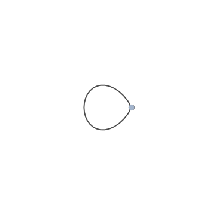
1-loop massless bubble
FCLoopIntegralToGraph[FAD[p, p - q], {p}]
FCLoopGraphPlot[%]\left\{\{-3\to 2,-1\to 1,1\to 2,1\to 2\},\{-q,q,\{p,1,0\},\{p-q,1,0\}\},\left\{0,0,\frac{1}{(p^2+i \eta )},\frac{1}{((p-q)^2+i \eta )}\right\},1\right\}
1-loop massive bubble
FCLoopIntegralToGraph[FAD[{p, m1}, {p - q, m2}], {p}]
FCLoopGraphPlot[%]\left\{\{-3\to 2,-1\to 1,1\to 2,1\to 2\},\left\{-q,q,\left\{p,1,-\text{m1}^2\right\},\left\{p-q,1,-\text{m2}^2\right\}\right\},\left\{0,0,\frac{1}{(p^2-\text{m1}^2+i \eta )},\frac{1}{((p-q)^2-\text{m2}^2+i \eta )}\right\},1\right\}
1-loop massless triangle
FCLoopIntegralToGraph[FAD[p, p + q1, p + q1 + q2], {p}]
FCLoopGraphPlot[%]\left\{\{-3\to 3,-2\to 1,-1\to 2,1\to 2,1\to 3,2\to 3\},\{\text{q1}+\text{q2},\text{q2},\text{q1},\{p+\text{q1},1,0\},\{p+\text{q1}+\text{q2},1,0\},\{p,1,0\}\},\left\{0,0,0,\frac{1}{(p^2+i \eta )},\frac{1}{((p+\text{q1})^2+i \eta )},\frac{1}{((p+\text{q1}+\text{q2})^2+i \eta )}\right\},1\right\}
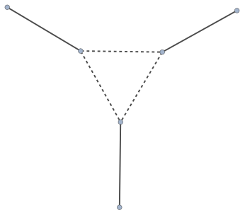
1-loop massless box
FCLoopIntegralToGraph[FAD[p, p + q1, p + q1 + q2, p + q1 + q2 + q3], {p}]
FCLoopGraphPlot[%]\left\{\{-4\to 4,-3\to 1,-2\to 2,-1\to 3,1\to 2,1\to 4,2\to 3,3\to 4\},\{\text{q1}+\text{q2}+\text{q3},\text{q3},\text{q2},\text{q1},\{p+\text{q1}+\text{q2},1,0\},\{p+\text{q1}+\text{q2}+\text{q3},1,0\},\{p+\text{q1},1,0\},\{p,1,0\}\},\left\{0,0,0,0,\frac{1}{(p^2+i \eta )},\frac{1}{((p+\text{q1})^2+i \eta )},\frac{1}{((p+\text{q1}+\text{q2})^2+i \eta )},\frac{1}{((p+\text{q1}+\text{q2}+\text{q3})^2+i \eta )}\right\},1\right\}
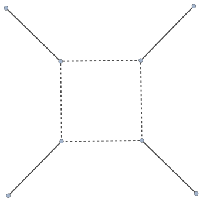
1-loop massless pentagon
FCLoopIntegralToGraph[FAD[p, p + q1, p + q1 + q2, p + q1 + q2 + q3, p + q1 + q2 + q3 + q4], {p}]
FCLoopGraphPlot[%]\left\{\{-5\to 5,-4\to 1,-3\to 2,-2\to 3,-1\to 4,1\to 2,1\to 5,2\to 3,3\to 4,4\to 5\},\{\text{q1}+\text{q2}+\text{q3}+\text{q4},\text{q4},\text{q3},\text{q2},\text{q1},\{p+\text{q1}+\text{q2}+\text{q3},1,0\},\{p+\text{q1}+\text{q2}+\text{q3}+\text{q4},1,0\},\{p+\text{q1}+\text{q2},1,0\},\{p+\text{q1},1,0\},\{p,1,0\}\},\left\{0,0,0,0,0,\frac{1}{(p^2+i \eta )},\frac{1}{((p+\text{q1})^2+i \eta )},\frac{1}{((p+\text{q1}+\text{q2})^2+i \eta )},\frac{1}{((p+\text{q1}+\text{q2}+\text{q3})^2+i \eta )},\frac{1}{((p+\text{q1}+\text{q2}+\text{q3}+\text{q4})^2+i \eta )}\right\},1\right\}
2-loop massless self-energy
FCLoopIntegralToGraph[FAD[p1, p2, Q - p1 - p2, Q - p1, Q - p2], {p1, p2}]
FCLoopGraphPlot[%]\left\{\{-3\to 2,-1\to 1,1\to 3,1\to 4,2\to 3,2\to 4,3\to 4\},\{-Q,Q,\{\text{p2},1,0\},\{Q-\text{p2},1,0\},\{Q-\text{p1},1,0\},\{\text{p1},1,0\},\{-\text{p1}-\text{p2}+Q,1,0\}\},\left\{0,0,\frac{1}{(\text{p2}^2+i \eta )},\frac{1}{(\text{p1}^2+i \eta )},\frac{1}{((Q-\text{p2})^2+i \eta )},\frac{1}{((Q-\text{p1})^2+i \eta )},\frac{1}{((-\text{p1}-\text{p2}+Q)^2+i \eta )}\right\},1\right\}
Same topology as before but now fully massive and with some dots
FCLoopIntegralToGraph[FAD[{p1, m}, {p2, m2}, {Q - p1 - p2, m}, {Q - p1, m, 2}, {Q - p2, m,2}], {p1, p2}]
FCLoopGraphPlot[%]\left\{\{-3\to 2,-1\to 1,1\to 3,1\to 4,2\to 3,2\to 4,3\to 4\},\left\{-Q,Q,\left\{\text{p2},1,-\text{m2}^2\right\},\left\{Q-\text{p2},2,-m^2\right\},\left\{Q-\text{p1},2,-m^2\right\},\left\{\text{p1},1,-m^2\right\},\left\{-\text{p1}-\text{p2}+Q,1,-m^2\right\}\right\},\left\{0,0,\frac{1}{(\text{p2}^2-\text{m2}^2+i \eta )},\frac{1}{(\text{p1}^2-m^2+i \eta )},\frac{1}{((Q-\text{p2})^2-m^2+i \eta )},\frac{1}{((Q-\text{p1})^2-m^2+i \eta )},\frac{1}{((-\text{p1}-\text{p2}+Q)^2-m^2+i \eta )}\right\},1\right\}
3-loop massless self-energy
FCLoopIntegralToGraph[FAD[p1, p2, p3, Q - p1 - p2 - p3, Q - p1 - p2, Q - p1, Q - p2, p1 + p3], {p1, p2, p3}]
FCLoopGraphPlot[%]\left\{\{-3\to 2,-1\to 1,1\to 5,1\to 6,2\to 3,2\to 5,3\to 4,3\to 6,4\to 5,4\to 6\},\{-Q,Q,\{\text{p2},1,0\},\{Q-\text{p2},1,0\},\{\text{p1},1,0\},\{Q-\text{p1},1,0\},\{\text{p3},1,0\},\{\text{p1}+\text{p3},1,0\},\{-\text{p1}-\text{p2}+Q,1,0\},\{-\text{p1}-\text{p2}-\text{p3}+Q,1,0\}\},\left\{0,0,\frac{1}{(\text{p3}^2+i \eta )},\frac{1}{(\text{p2}^2+i \eta )},\frac{1}{(\text{p1}^2+i \eta )},\frac{1}{((\text{p1}+\text{p3})^2+i \eta )},\frac{1}{((Q-\text{p2})^2+i \eta )},\frac{1}{((Q-\text{p1})^2+i \eta )},\frac{1}{((-\text{p1}-\text{p2}+Q)^2+i \eta )},\frac{1}{((-\text{p1}-\text{p2}-\text{p3}+Q)^2+i \eta )}\right\},1\right\}
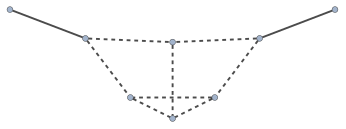
3-loop self-energy with two massive lines
FCLoopIntegralToGraph[Times @@ {SFAD[{{p1, 0}, {m^2, 1}, 1}], SFAD[{{p2, 0}, {0, 1}, 1}],
SFAD[{{p3, 0}, {0, 1}, 1}], SFAD[{{p1 + p2 + p3 - Q, 0}, {0, 1}, 1}], SFAD[{{p2 + p3, 0}, {0, 1}, 1}],
SFAD[{{p2 - Q, 0}, {0, 1}, 1}], SFAD[{{p1 - Q, 0}, {m^2, 1}, 1}],SFAD[{{p2 + p3 - Q, 0}, {0, 1}, 1}]},
{p1, p2, p3}]
FCLoopGraphPlot[%]\left\{\{-3\to 2,-1\to 1,1\to 3,1\to 4,2\to 5,2\to 6,3\to 4,3\to 5,4\to 6,5\to 6\},\left\{-Q,Q,\{\text{p2},1,0\},\{\text{p2}-Q,1,0\},\left\{\text{p1}-Q,1,-m^2\right\},\left\{\text{p1},1,-m^2\right\},\{\text{p3},1,0\},\{\text{p2}+\text{p3},1,0\},\{\text{p2}+\text{p3}-Q,1,0\},\{\text{p1}+\text{p2}+\text{p3}-Q,1,0\}\right\},\left\{0,0,\frac{1}{(\text{p3}^2+i \eta )},\frac{1}{(\text{p2}^2+i \eta )},\frac{1}{((\text{p2}+\text{p3})^2+i \eta )},\frac{1}{((\text{p2}-Q)^2+i \eta )},\frac{1}{(\text{p1}^2-m^2+i \eta )},\frac{1}{((\text{p2}+\text{p3}-Q)^2+i \eta )},\frac{1}{((\text{p1}+\text{p2}+\text{p3}-Q)^2+i \eta )},\frac{1}{((\text{p1}-Q)^2-m^2+i \eta )}\right\},1\right\}
2-loop triangle
FCLoopIntegralToGraph[FAD[p1, p2, Q1 + p1, Q2 - p1, Q1 + p1 + p2, Q2 - p1 - p2], {p1, p2}]
FCLoopGraphPlot[%]\left\{\{-3\to 3,-2\to 1,-1\to 2,1\to 2,1\to 5,2\to 4,3\to 4,3\to 5,4\to 5\},\{\text{Q1}+\text{Q2},\text{Q2},\text{Q1},\{\text{p1},1,0\},\{\text{Q2}-\text{p1},1,0\},\{\text{p1}+\text{Q1},1,0\},\{\text{p1}+\text{p2}+\text{Q1},1,0\},\{-\text{p1}-\text{p2}+\text{Q2},1,0\},\{\text{p2},1,0\}\},\left\{0,0,0,\frac{1}{(\text{p2}^2+i \eta )},\frac{1}{(\text{p1}^2+i \eta )},\frac{1}{((\text{p1}+\text{Q1})^2+i \eta )},\frac{1}{((\text{p1}+\text{p2}+\text{Q1})^2+i \eta )},\frac{1}{((\text{Q2}-\text{p1})^2+i \eta )},\frac{1}{((-\text{p1}-\text{p2}+\text{Q2})^2+i \eta )}\right\},1\right\}
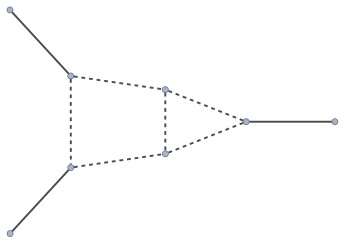
Not all loop integrals admit a graph representation. Furthermore, an integral may have a weird momentum routing that cannot be automatically recognized by the employed algorithm. Consider e.g.
topo = FCTopology[TRIX1, {SFAD[{{p2, 0}, {0, 1}, 1}], SFAD[{{p1 + Q1, 0}, {0, 1}, 1}],
SFAD[{{p1 + p2 + Q1, 0}, {0, 1}, 1}], SFAD[{{-p1 + Q2, 0}, {0, 1}, 1}],
SFAD[{{-p1 - p2 + Q2, 0}, {0, 1}, 1}]}, {p1, p2}, {Q1, Q2}, {}, {}]\text{FCTopology}\left(\text{TRIX1},\left\{\frac{1}{(\text{p2}^2+i \eta )},\frac{1}{((\text{p1}+\text{Q1})^2+i \eta )},\frac{1}{((\text{p1}+\text{p2}+\text{Q1})^2+i \eta )},\frac{1}{((\text{Q2}-\text{p1})^2+i \eta )},\frac{1}{((-\text{p1}-\text{p2}+\text{Q2})^2+i \eta )}\right\},\{\text{p1},\text{p2}\},\{\text{Q1},\text{Q2}\},\{\},\{\}\right)
Here FCLoopIntegralToGraph has no way to know that the
actual momentum is Q1+Q2, i.e. it is a 2- and not 3-point function
FCLoopIntegralToGraph[topo]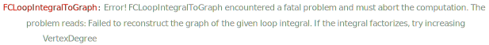
\text{False}
However, if we explicitly provide this information, in many cases the function can still perform the proper reconstruction
FCLoopIntegralToGraph[topo, Momentum -> {Q1 + Q2}]
FCLoopGraphPlot[%]\left\{\{-3\to 2,-1\to 1,1\to 3,1\to 4,2\to 3,2\to 4,3\to 4\},\{-\text{Q1}-\text{Q2},\text{Q1}+\text{Q2},\{\text{p1}+\text{Q1},1,0\},\{\text{Q2}-\text{p1},1,0\},\{\text{p1}+\text{p2}+\text{Q1},1,0\},\{-\text{p1}-\text{p2}+\text{Q2},1,0\},\{\text{p2},1,0\}\},\left\{0,0,\frac{1}{(\text{p2}^2+i \eta )},\frac{1}{((\text{p1}+\text{Q1})^2+i \eta )},\frac{1}{((\text{p1}+\text{p2}+\text{Q1})^2+i \eta )},\frac{1}{((\text{Q2}-\text{p1})^2+i \eta )},\frac{1}{((-\text{p1}-\text{p2}+\text{Q2})^2+i \eta )}\right\},1\right\}
And here is another example. This NRQCD integral from arXiv:1907.08227 looks like as if it has only one external momentum flowing in
FCLoopIntegralToGraph[FAD[{k, m}, l + p, l - p, k + l], {k, l}]\text{False}
while in reality there are two of them: p and
2p
FCLoopIntegralToGraph[FAD[{k, m}, l + p, l - p, k + l], {k, l},
Momentum -> {2 p, p}, FCE -> True]
FCLoopGraphPlot[%]\left\{\{-4\to 3,-2\to 2,-1\to 1,1\to 2,1\to 3,2\to 3,2\to 3\},\left\{p,p,2 p,\{l+p,1,0\},\{l-p,1,0\},\{k+l,1,0\},\left\{k,1,-m^2\right\}\right\},\left\{0,0,0,\frac{1}{((l+p)^2+i \eta )},\frac{1}{((k+l)^2+i \eta )},\frac{1}{((l-p)^2+i \eta )},\frac{1}{(k^2-m^2+i \eta )}\right\},1\right\}
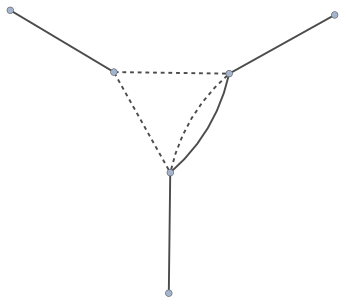
In this case the correct form of the external momentum can be deduced upon performing some elementary shifts. The direct application of the function fails
ex = FCTopology[topo1X12679, {SFAD[{{p1, 0}, {0, 1}, 1}], SFAD[{{p2 + p3, 0}, {0, 1}, 1}],
SFAD[{{p2 - Q, 0}, {0, 1}, 1}], SFAD[{{p1 + p3 - Q, 0}, {0, 1}, 1}]}, {p1, p2, p3}, {Q}, {}, {}]\text{FCTopology}\left(\text{topo1X12679},\left\{\frac{1}{(\text{p1}^2+i \eta )},\frac{1}{((\text{p2}+\text{p3})^2+i \eta )},\frac{1}{((\text{p2}-Q)^2+i \eta )},\frac{1}{((\text{p1}+\text{p3}-Q)^2+i \eta )}\right\},\{\text{p1},\text{p2},\text{p3}\},\{Q\},\{\},\{\}\right)
FCLoopIntegralToGraph[ex]\text{False}
Yet let us consider
exShifted = FCReplaceMomenta[ex, {p2 -> p2 - p3 + p1 - Q, p3 -> p3 - p1 + Q}]\text{FCTopology}\left(\text{topo1X12679},\left\{\frac{1}{(\text{p1}^2+i \eta )},\frac{1}{(\text{p2}^2+i \eta )},\frac{1}{((\text{p1}+\text{p2}-\text{p3}-2 Q)^2+i \eta )},\frac{1}{(\text{p3}^2+i \eta )}\right\},\{\text{p1},\text{p2},\text{p3}\},\{Q\},\{\},\{\}\right)
Now we immediately see that the proper external momentum to consider
is 2Q instead of just Q
FCLoopIntegralToGraph[exShifted, Momentum -> {2 Q}]
FCLoopGraphPlot[%]\left\{\{-3\to 2,-1\to 1,1\to 2,1\to 2,1\to 2,1\to 2\},\{-2 Q,2 Q,\{\text{p1},1,0\},\{\text{p2},1,0\},\{\text{p1}+\text{p2}-\text{p3}-2 Q,1,0\},\{\text{p3},1,0\}\},\left\{0,0,\frac{1}{(\text{p1}^2+i \eta )},\frac{1}{(\text{p2}^2+i \eta )},\frac{1}{((\text{p1}+\text{p2}-\text{p3}-2 Q)^2+i \eta )},\frac{1}{(\text{p3}^2+i \eta )}\right\},1\right\}
When dealing with products of tadpole integrals, the function may not
always recognize that the appearing external momenta are spurious. For
example, here there is no q momentum flowing through any of
the lines
int = SFAD[{{ p1, 0}, {mg^2, 1}, 1}] SFAD[{{ p3, -2 p3 . q}, {0, 1}, 1}]
FCLoopIntegralToGraph[int, {p1, p3}]\frac{1}{(\text{p1}^2-\text{mg}^2+i \eta ) (\text{p3}^2-2 (\text{p3}\cdot q)+i \eta )}
\text{False}
In this case we may explicitly tell the function that this integral doesn’t depend on any external momenta
FCLoopIntegralToGraph[int, {p1, p3}, Momentum -> {}]
FCLoopGraphPlot[%]\left\{\{1\to 1,1\to 1\},\left( \begin{array}{ccc} \;\text{p1} & 1 & -\text{mg}^2 \\ \;\text{p3}-q & 1 & 0 \\ \end{array} \right),\left\{\frac{1}{(\text{p1}^2-\text{mg}^2+i \eta )},\frac{1}{(\text{p3}^2-2 (\text{p3}\cdot q)+i \eta )}\right\},1\right\}
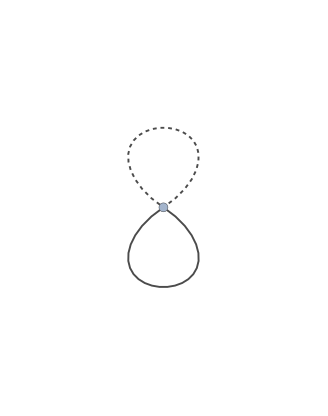
The Style option can be used to label lines carrying
different masses in a particular way
OptionValue[FCLoopGraphPlot, Style]\{\{\text{InternalLine},\_,\_,0\}:\to \{\text{Dashed},\text{Thick},\text{Black}\},\{\text{InternalLine},\_,\_,\text{FeynCalc$\grave{ }$FCLoopGraphPlot$\grave{ }$Private$\grave{ }$mm$\_$}\;\text{/;}\;\text{FeynCalc$\grave{ }$FCLoopGraphPlot$\grave{ }$Private$\grave{ }$mm}\;\text{=!=}0\}:\to \{\text{Thick},\text{Black}\},\{\text{ExternalLine},\_\}:\to \{\text{Thick},\text{Black}\}\}
When dealing with factorizing integral it might be necessary to
increase VertexDegree to 7 or 8
(or even a higher value, depending on the integrals)
FCLoopIntegralToGraph[FAD[{p1, m1}] FAD[{p2, m2}], {p1, p2}]
FCLoopGraphPlot[%]\left\{\{1\to 1,1\to 1\},\left( \begin{array}{ccc} \;\text{p2} & 1 & -\text{m2}^2 \\ \;\text{p1} & 1 & -\text{m1}^2 \\ \end{array} \right),\left\{\frac{1}{(\text{p2}^2-\text{m2}^2+i \eta )},\frac{1}{(\text{p1}^2-\text{m1}^2+i \eta )}\right\},1\right\}
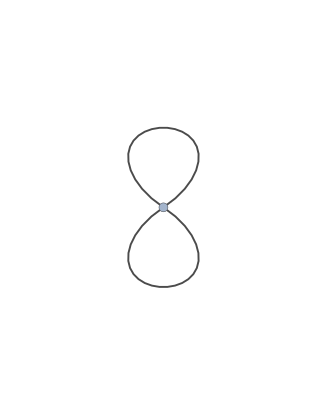
FCLoopIntegralToGraph[FAD[{p1, m1}] FAD[{p2, m2}] FAD[p3, p3 + q], {p1, p2, p3},
VertexDegree -> 7]
FCLoopGraphPlot[%]\left\{\{-3\to 2,-1\to 1,1\to 2,1\to 2,2\to 2,2\to 2\},\left\{-q,q,\{\text{p3},1,0\},\{\text{p3}+q,1,0\},\left\{\text{p2},1,-\text{m2}^2\right\},\left\{\text{p1},1,-\text{m1}^2\right\}\right\},\left\{0,0,\frac{1}{(\text{p3}^2+i \eta )},\frac{1}{((\text{p3}+q)^2+i \eta )},\frac{1}{(\text{p2}^2-\text{m2}^2+i \eta )},\frac{1}{(\text{p1}^2-\text{m1}^2+i \eta )}\right\},1\right\}
FCLoopIntegralToGraph[FAD[{p1, m1}] FAD[{p2, m2}] FAD[p3, p3 + q] FAD[{p4, m4}],
{p1, p2, p3, p4}, VertexDegree -> 9]
FCLoopGraphPlot[%]\left\{\{-3\to 2,-1\to 1,1\to 2,1\to 2,2\to 2,2\to 2,2\to 2\},\left\{-q,q,\{\text{p3},1,0\},\{\text{p3}+q,1,0\},\left\{\text{p4},1,-\text{m4}^2\right\},\left\{\text{p2},1,-\text{m2}^2\right\},\left\{\text{p1},1,-\text{m1}^2\right\}\right\},\left\{0,0,\frac{1}{(\text{p3}^2+i \eta )},\frac{1}{((\text{p3}+q)^2+i \eta )},\frac{1}{(\text{p4}^2-\text{m4}^2+i \eta )},\frac{1}{(\text{p2}^2-\text{m2}^2+i \eta )},\frac{1}{(\text{p1}^2-\text{m1}^2+i \eta )}\right\},1\right\}
Here we choose to use thick dashed blue and red lines for massive
lines containing mc and mg respectively. The
massless lines are black an dashed.
FCLoopIntegralToGraph[ FAD[{k2, mb}, {k3}, {k1 - q, mc}, {k1 - k2, mc}, {k2 - k3}], {k1, k2, k3}]
Magnify[FCLoopGraphPlot[%, GraphPlot -> {MultiedgeStyle -> 0.35, Frame -> True},
Style -> {{"InternalLine", _, _, mm_ /; ! FreeQ[mm, mg]} -> {Red, Thick, Dashed},
{"InternalLine", _, _, mm_ /; ! FreeQ[mm, mc]} -> {Blue, Thick, Dashed}}], 1.5]\left\{\{-3\to 2,-1\to 1,1\to 2,1\to 2,1\to 3,2\to 3,2\to 3\},\left\{-q,q,\left\{\text{k1}-q,1,-\text{mc}^2\right\},\left\{\text{k1}-\text{k2},1,-\text{mc}^2\right\},\left\{\text{k2},1,-\text{mb}^2\right\},\{\text{k3},1,0\},\{\text{k2}-\text{k3},1,0\}\right\},\left\{0,0,\frac{1}{(\text{k3}^2+i \eta )},\frac{1}{((\text{k2}-\text{k3})^2+i \eta )},\frac{1}{(\text{k2}^2-\text{mb}^2+i \eta )},\frac{1}{((\text{k1}-q)^2-\text{mc}^2+i \eta )},\frac{1}{((\text{k1}-\text{k2})^2-\text{mc}^2+i \eta )}\right\},1\right\}
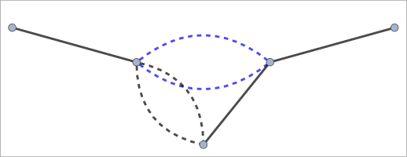
FCLoopIntegralToGraph[ FAD[{k2, mg}, {k3, mc}, {k1, q}, {k1 - k2}, {k2 - k3, mc}], {k1, k2,k3}]
Magnify[FCLoopGraphPlot[%, GraphPlot -> {MultiedgeStyle -> 0.35, Frame -> True},
Style -> {{"InternalLine", _, _, mm_ /; ! FreeQ[mm, mg]} -> {Red, Thick, Dashed},
{"InternalLine", _, _, mm_ /; ! FreeQ[mm, mc]} -> {Blue, Thick, Dashed}}], 1.5]\left\{\{1\to 2,1\to 3,1\to 3,2\to 3,2\to 3\},\left( \begin{array}{ccc} \;\text{k2} & 1 & -\text{mg}^2 \\ \;\text{k3} & 1 & -\text{mc}^2 \\ \;\text{k2}-\text{k3} & 1 & -\text{mc}^2 \\ \;\text{k1}-\text{k2} & 1 & 0 \\ \;\text{k1} & 1 & -q^2 \\ \end{array} \right),\left\{\frac{1}{(\text{k3}^2-\text{mc}^2+i \eta )},\frac{1}{(\text{k2}^2-\text{mg}^2+i \eta )},\frac{1}{((\text{k1}-\text{k2})^2+i \eta )},\frac{1}{(\text{k1}^2-q^2+i \eta )},\frac{1}{((\text{k2}-\text{k3})^2-\text{mc}^2+i \eta )}\right\},1\right\}
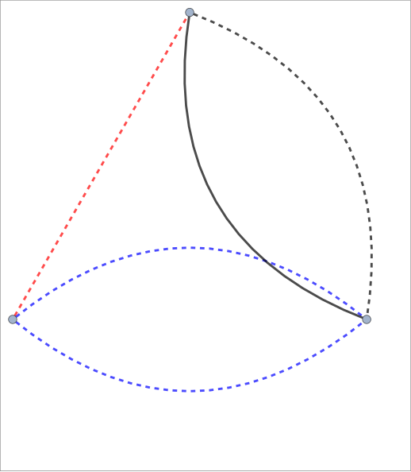
FCLoopIntegralToGraph[ FAD[{k2, mg}, {k3, mc}, {k1 - q}, {k2 - q, mb}, {k1 - k2}, {k2 - k3,mc}],
{k1, k2, k3}]
Magnify[FCLoopGraphPlot[%, GraphPlot -> {MultiedgeStyle -> 0.35, Frame -> True},
Style -> {{"InternalLine", _, _, mm_ /; ! FreeQ[mm, mg]} -> {Red, Thick, Dashed},
{"InternalLine", _, _, mm_ /; ! FreeQ[mm, mc]} -> {Blue, Thick, Dashed}}], 1.5]\left\{\{-3\to 2,-1\to 1,1\to 3,1\to 4,2\to 3,2\to 3,2\to 4,2\to 4\},\left\{-q,q,\left\{\text{k2}-q,1,-\text{mb}^2\right\},\left\{\text{k2},1,-\text{mg}^2\right\},\{\text{k1}-q,1,0\},\{\text{k1}-\text{k2},1,0\},\left\{\text{k3},1,-\text{mc}^2\right\},\left\{\text{k2}-\text{k3},1,-\text{mc}^2\right\}\right\},\left\{0,0,\frac{1}{((\text{k1}-q)^2+i \eta )},\frac{1}{(\text{k3}^2-\text{mc}^2+i \eta )},\frac{1}{(\text{k2}^2-\text{mg}^2+i \eta )},\frac{1}{((\text{k1}-\text{k2})^2+i \eta )},\frac{1}{((\text{k2}-q)^2-\text{mb}^2+i \eta )},\frac{1}{((\text{k2}-\text{k3})^2-\text{mc}^2+i \eta )}\right\},1\right\}
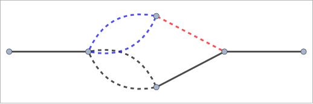
FCLoopIntegralToGraph[ FAD[{k2, 0, 2}, {k1 - q}, {k1 - k3, mc}, {k2 - k3, mc}], {k1, k2, k3}]
Magnify[FCLoopGraphPlot[%, GraphPlot -> {MultiedgeStyle -> 0.35, Frame -> True},
Style -> {{"InternalLine", _, _, mm_ /; ! FreeQ[mm, mg]} -> {Red, Thick, Dashed},
{"InternalLine", _, _, mm_ /; ! FreeQ[mm, mc]} -> {Blue, Thick, Dashed}}], 1.5]\left\{\{-3\to 2,-1\to 1,1\to 2,1\to 2,1\to 2,1\to 2\},\left\{-q,q,\{\text{k2},2,0\},\{\text{k1}-q,1,0\},\left\{\text{k2}-\text{k3},1,-\text{mc}^2\right\},\left\{\text{k1}-\text{k3},1,-\text{mc}^2\right\}\right\},\left\{0,0,\frac{1}{(\text{k2}^2+i \eta )},\frac{1}{((\text{k1}-q)^2+i \eta )},\frac{1}{((\text{k2}-\text{k3})^2-\text{mc}^2+i \eta )},\frac{1}{((\text{k1}-\text{k3})^2-\text{mc}^2+i \eta )}\right\},1\right\}
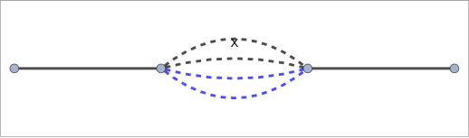
We can style a fully massive 1-loop box in a very creative way
FCLoopIntegralToGraph[FAD[{p, m1}, {p + q1, m2}, {p + q1 + q2, m3}, {p + q1 + q2 + q3, m4}], {p}]
FCLoopGraphPlot[%, GraphPlot -> {MultiedgeStyle -> 0.35, Frame -> True}, Style -> {
{"InternalLine", _, _, mm_ /; ! FreeQ[mm, m1]} -> {Red, Thick},
{"InternalLine", _, _, mm_ /; ! FreeQ[mm, m2]} -> {Blue, Thick},
{"InternalLine", _, _, mm_ /; ! FreeQ[mm, m3]} -> {Green, Thick},
{"InternalLine", _, _, mm_ /; ! FreeQ[mm, m4]} -> {Purple, Thick},
{"ExternalLine", q1} -> {Brown, Thick, Dashed}
}]\left\{\{-4\to 4,-3\to 1,-2\to 2,-1\to 3,1\to 2,1\to 4,2\to 3,3\to 4\},\left\{\text{q1}+\text{q2}+\text{q3},\text{q3},\text{q2},\text{q1},\left\{p+\text{q1}+\text{q2},1,-\text{m3}^2\right\},\left\{p+\text{q1}+\text{q2}+\text{q3},1,-\text{m4}^2\right\},\left\{p+\text{q1},1,-\text{m2}^2\right\},\left\{p,1,-\text{m1}^2\right\}\right\},\left\{0,0,0,0,\frac{1}{(p^2-\text{m1}^2+i \eta )},\frac{1}{((p+\text{q1})^2-\text{m2}^2+i \eta )},\frac{1}{((p+\text{q1}+\text{q2})^2-\text{m3}^2+i \eta )},\frac{1}{((p+\text{q1}+\text{q2}+\text{q3})^2-\text{m4}^2+i \eta )}\right\},1\right\}
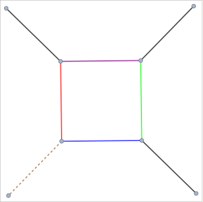
The same goes for a 2-loop box with 3 massive lines
FCLoopIntegralToGraph[FAD[{p1, m1}, {p2, m2}, {Q1 + p1, m3}, Q2 - p1, Q1 + p1 + p2, Q2 - p1 - p2,
Q2 + Q3 - p1 - p2], {p1, p2}]
FCLoopGraphPlot[%, GraphPlot -> {MultiedgeStyle -> 0.35, Frame -> True}, Style -> {
{"InternalLine", _, _, mm_ /; ! FreeQ[mm, m1]} -> {Red, Thick},
{"InternalLine", _, _, mm_ /; ! FreeQ[mm, m2]} -> {Blue, Thick},
{"InternalLine", _, _, mm_ /; ! FreeQ[mm, m3]} -> {Green, Thick},
{"InternalLine", _, _, mm_ /; ! FreeQ[mm, m4]} -> {Purple, Thick},
{"ExternalLine", q1} -> {Brown, Thick, Dashed}
}]\left\{\{-4\to 4,-3\to 1,-2\to 2,-1\to 3,1\to 4,1\to 6,2\to 3,2\to 6,3\to 5,4\to 5,5\to 6\},\left\{\text{Q1}+\text{Q2}+\text{Q3},\text{Q3},\text{Q2},\text{Q1},\{-\text{p1}-\text{p2}+\text{Q2}+\text{Q3},1,0\},\{-\text{p1}-\text{p2}+\text{Q2},1,0\},\left\{\text{p1},1,-\text{m1}^2\right\},\{\text{Q2}-\text{p1},1,0\},\left\{\text{p1}+\text{Q1},1,-\text{m3}^2\right\},\{\text{p1}+\text{p2}+\text{Q1},1,0\},\left\{\text{p2},1,-\text{m2}^2\right\}\right\},\left\{0,0,0,0,\frac{1}{((\text{p1}+\text{p2}+\text{Q1})^2+i \eta )},\frac{1}{((\text{Q2}-\text{p1})^2+i \eta )},\frac{1}{(\text{p2}^2-\text{m2}^2+i \eta )},\frac{1}{(\text{p1}^2-\text{m1}^2+i \eta )},\frac{1}{((\text{p1}+\text{Q1})^2-\text{m3}^2+i \eta )},\frac{1}{((-\text{p1}-\text{p2}+\text{Q2})^2+i \eta )},\frac{1}{((-\text{p1}-\text{p2}+\text{Q2}+\text{Q3})^2+i \eta )}\right\},1\right\}
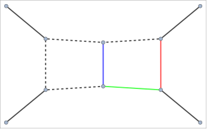
One can also (sort of) visualize the momentum flow, where we use powers to denote the dots
FCLoopIntegralToGraph[FCTopology[topo1X1, {SFAD[{{p2, 0}, {m1^2, 1}, 2}],
SFAD[{{p1, 0}, {m1^2, 1}, 2}],
SFAD[{{p2 + p3, 0}, {0, 1}, 1}], SFAD[{{p2 + p3, 0}, {0, 1}, 1}],
SFAD[{{p1 + p3, 0}, {0, 1}, 1}], SFAD[{{p1 + p2 + p3, 0}, {0, 1}, 1}]}, {p1, p2, p3}, {}, {}, {}]]
FCLoopGraphPlot[%, GraphPlot -> {MultiedgeStyle -> 0.35, Frame -> True}, Labeled -> {
{"InternalLine", x_, pow_, _} :> x^pow,
{"ExternalLine", _} :> {}}]\left\{\{1\to 2,1\to 3,1\to 3,2\to 3,2\to 3\},\left( \begin{array}{ccc} \;\text{p1}+\text{p2}+\text{p3} & 1 & 0 \\ \;\text{p2} & 2 & -\text{m1}^2 \\ \;\text{p1}+\text{p3} & 1 & 0 \\ \;\text{p1} & 2 & -\text{m1}^2 \\ \;\text{p2}+\text{p3} & 2 & 0 \\ \end{array} \right),\left\{\frac{1}{(\text{p2}^2-\text{m1}^2+i \eta )},\frac{1}{(\text{p1}^2-\text{m1}^2+i \eta )},\frac{1}{((\text{p2}+\text{p3})^2+i \eta )},\frac{1}{((\text{p1}+\text{p3})^2+i \eta )},\frac{1}{((\text{p1}+\text{p2}+\text{p3})^2+i \eta )}\right\},1\right\}